01 · Traço único
Premium acessível · ref. Warby Parker
Óculos desenhados num só gesto: a haste escorre e vira a onda da marca. Sem container, leve e elegante.
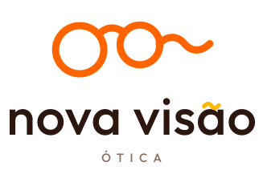
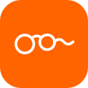
02 · Serifa suave
Premium acessível · ref. Warby Parker
Serifa de cantos suaves traz calor editorial; o ícone ganha traço fino e um brilho na lente.
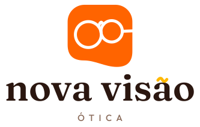
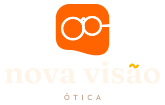
03 · Duas lentes, um horizonte
Geométrico & ousado · ref. Lenscrafters
Duas lentes cortadas por uma única onda contínua: o horizonte de uma visão nova.
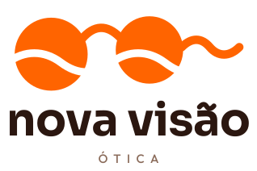
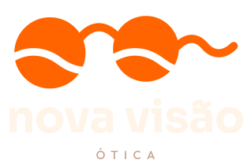
04 · Evolução fiel
Geométrico & ousado · ref. Lenscrafters
O logo atual, refinado: proporções de lente mais precisas, onda com ritmo e tipografia redesenhada.
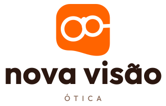
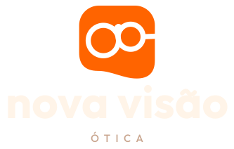
05 · Olhar que sorri
Orgânico & humano · ref. Óticas Carol
Duas lentes viram olhos e a onda vira sorriso. Marca de gente, próxima e acolhedora.
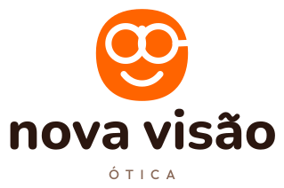
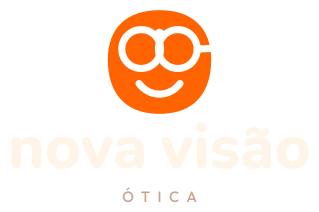
06 · Folha
Orgânico & humano · ref. Óticas Carol
Container em formato de folha, com a haste em onda. Cuidado, frescor e crescimento.
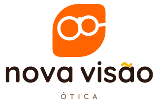
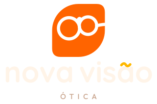
07 · Sticker
Jovem & divertido · ref. Chilli Beans
Container inclinado com sombra dura e lentes amarelas. Pede para virar adesivo, sacola e story.
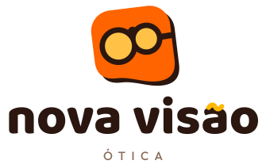
08 · Órbita
Jovem & divertido · ref. Chilli Beans
Dois aros em laranja e amarelo; onde se cruzam nasce a ponte dos óculos. A onda assina por baixo.
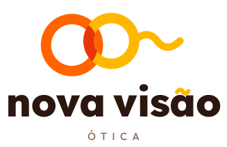
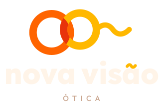